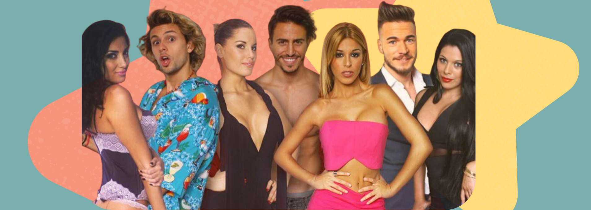
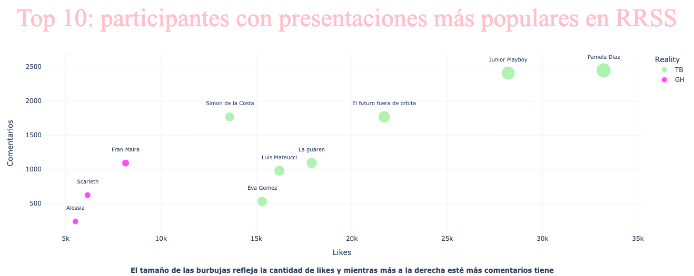

Gráficos
Comparación de tus realitys favoritos
En esta sección encontrarás gráficos que comparan los realitys
Gráfico datos iniciales sobre instagram
- Se comparó la reacción de los usuarios a las presentaciones en Instagram de los participantes de ambos realitys, con la creación de un TOP 10, considerando likes y comentarios. Gran Hermano obtuvo los últimos 3 puestos en ambas categorias. Tierra Brava tiene el resto de los participantes y los con mayores interacciones, quedando en los 3 primeros lugares: Pamela Díaz, Junior Playboy y el Futuro Fuera de Ortbita
- Puedes visualizar el gráfico para ver todos los resultados. Esta comparación arroja que los participantes más populares están en el reality Tierra Brava, obteniendo 7 lugares del TOP 10 participantes de los realitys actuales.

Popularidad de los participantes en Twitter (X)
- Los siguientes gráficos muestran el recibimiento inicial de los concursantes y una comparación entre Tierra Brava y Gran Hermano
gráfico 1
gráfico 2
Prodcucciones chilenas
- En este gráfico podemos ver la oferta de programas, considerando que su producción obedece a una demanda del público chileno